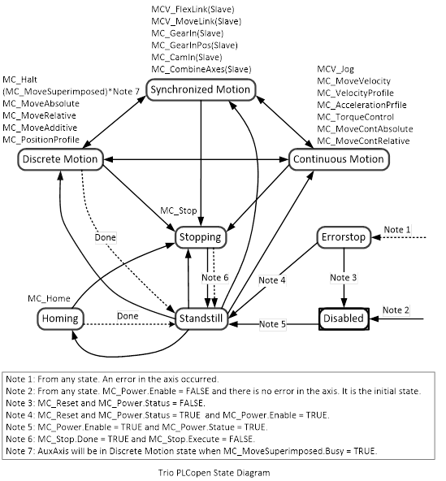

All function blocks defined in Trio PLCopen Motion Control conform to the behaviour of the axis defined in the state diagram below.
The diagram is focused on a single axis. Multiple axis Function Blocks, MC_CamIn , MC_GearIn and MC_Phasing can be looked at, from the state diagram point of view, as multiple single axis blocks that are all in specific states. For instance, the CAM Master can be in the state ‘ContinuousMotion’. The corresponding slave is in the state ‘SynchronizedMotion’. Connecting a slave axis to a master axis has no influence on the master axis.
Arrows within the state diagram show the possible state transitions between the states. State transitions due to an issued command are shown by full arrows. Dashed arrows are used for state transitions that occur when a command of an axis has terminated or a system related transition (like error related). The motion commands which transit the axis to the corresponding motion state are listed above the states. These motion commands may also be issued when the axis is already in the according motion state.

Function blocks which are not listed in the State Diagram do not affect the state in the State Diagram, meaning that whenever they are called, the state does not change. Some of these function blocks are MC_ReadStatus , MC_ReadAxisError , MC_ReadParameter , etc.
|
Disabled |
|
|
Errorstop |
|
|
Standstill |
|
Execution and Status of Function Blocks